This project aims to make massive scale simulations of spiking neural networks easily accessible to the research community, and in particular researches interested in neuromorphic computing for artificial intelligence and neuroscience researchers.
Key Features#

FPGA Based
Built using off the shelf reconfigurable hardware.
Built using off the shelf reconfigurable hardware.

Large Networks
Capable of running up to 163 million neurons and 40 billion synapses.
Capable of running up to 163 million neurons and 40 billion synapses.

Scalable Architecture
Hierarchical system architecture allows the system to be easily scaled.
Hierarchical system architecture allows the system to be easily scaled.
Publically Available
Freely available for anyone to use over a web portal via the Neuroscience Gateway.
Freely available for anyone to use over a web portal via the Neuroscience Gateway.